Analysis uses oscillators, Buy/Sell signal dots, and trendlines. Horizontal price lines and colored zones are excluded. Not financial advice.
| Ticker | Qty | % Alloc | Chart Rating | Entry Zone | Action | Notes |
|---|---|---|---|---|---|---|
| SOFI | *** | *** | NEAR ZONE | $15.00–15.50 | Given the current 1.8% portfolio allocation, it is advisable to hold the existing position and observe. Do not add to the position until a clear bullish reversal signal is confirmed. If the yellow trendline breaks decisively, consider reducing the position to manage risk. | |
| VXUS | *** | *** | HIGH RISK | $N/A (Downtrend) | Given the current 3.1% portfolio allocation and the prevailing bearish technical signals, it is recommended to hold or consider reducing the position to manage risk. Avoid buying more at this time. | |
| AMD | *** | *** | HIGH RISK | $No clear entry zone visible at current price; significant pullback needed. | Given the current portfolio allocation of 3.5% (40 shares) and the high-risk, overbought technical conditions, it is recommended to hold the existing position but strongly advise against adding more shares at this time. Consider reducing exposure if the price shows signs of reversal. | |
| BE | *** | *** | HIGH RISK | $220–240 | Given the current 1.1% portfolio allocation (15.0 shares) and the high-risk, overbought conditions, it is recommended to hold the current position but avoid adding more shares at this price level. Consider taking partial profits if the price shows signs of reversal or a breakdown below the channel. | |
| GOOG | *** | *** | HIGH RISK | $300–320 | Given the current 4.5% portfolio allocation and the high-risk technical setup (overbought RSI with a bearish crossover), it is recommended to hold the current position and wait for a significant pullback to consider buying more. Avoid increasing exposure at current levels. | |
| NVDA | *** | *** | HIGH RISK | $Not advisable at current levels; wait for a pullback | Given the current small portfolio allocation (1.3%) and the high risk associated with buying at current extended levels, it is recommended to hold the existing 25.0 shares and wait for a significant pullback or clearer bullish signals before considering buying more. | |
| STX | *** | *** | HIGH RISK | $A significant pullback, ideally when the RSI cools down from its overbought state (below 70) and potentially forms a bullish crossover of the purple line above the orange line after a correction. | Given the current high risk and overbought conditions, and a 3.0% portfolio allocation, it is recommended to hold the current position. Avoid buying more at this elevated price level. | |
| GLD | *** | *** | NOT YET | $400–415 | Hold current 2.7% allocation. Do not add more shares until the RSI confirms a bullish trend reversal to avoid catching a falling knife. | |
| LLY | *** | *** | NOT YET | $775–825 | With 0.0% current allocation, remain patient. Do not initiate a position until the downtrend stabilizes and technical indicators show a bullish reversal crossover. | Watchlist — no position held |
| DGRO | *** | *** | WAIT | $70.00–71.50 | With a current allocation of 1.8%, the position is modest. Recommend holding current shares and waiting for a better entry point closer to $71.00 before increasing the allocation to a larger core position. | |
| SLV | *** | *** | WAIT | $60–65 | Hold current allocation (2.5%) but monitor closely for reversal signals. Avoid adding more shares until a clear bullish reversal is confirmed. | |
| VEA | *** | *** | WAIT | $Not currently in an ideal entry zone; consider lower levels or a clear bullish reversal. | Hold the current 2.5% allocation and monitor the price action for a clearer bullish reversal or further decline. Avoid adding to the position at this time. | |
| VWO | *** | *** | WAIT | $A clear bullish reversal signal, ideally near 52–53 | Given the current 10.4% portfolio allocation and the bearish technical signals, it is recommended to hold the current position and monitor for clearer bullish signals. Avoid adding to the position at current levels. | |
| HIMS | *** | *** | WAIT | $20–26 | Hold the current small position (0.7%). It is advisable to wait for clearer bullish signals, such as a confirmed breakout above the resistance trendline or a retest of stronger support levels, before considering adding to the position. | |
| IREN | *** | *** | WAIT | $32–34 (lower trendline support) or above 46 (confirmed breakout) | Given the current small allocation (1.1%) and the bearish technical setup at resistance, it is recommended to hold the current position and wait for a clearer bullish signal or a more favorable entry point. Buying more is not advised at this time. | |
| TSLA | *** | *** | WAIT | $340–360 | Hold the current 1.9% allocation (20 shares). It is advisable to wait for clearer bullish signals, such as a confirmed uptrend, a bullish RSI crossover, or a pullback to a stronger support level before considering buying more. | |
| AMZN | *** | *** | WAIT | $210–220 | Given the 0.0% current portfolio allocation and the overbought technical conditions, it is recommended to wait for a more favorable entry point on a pullback. | Watchlist — no position held |
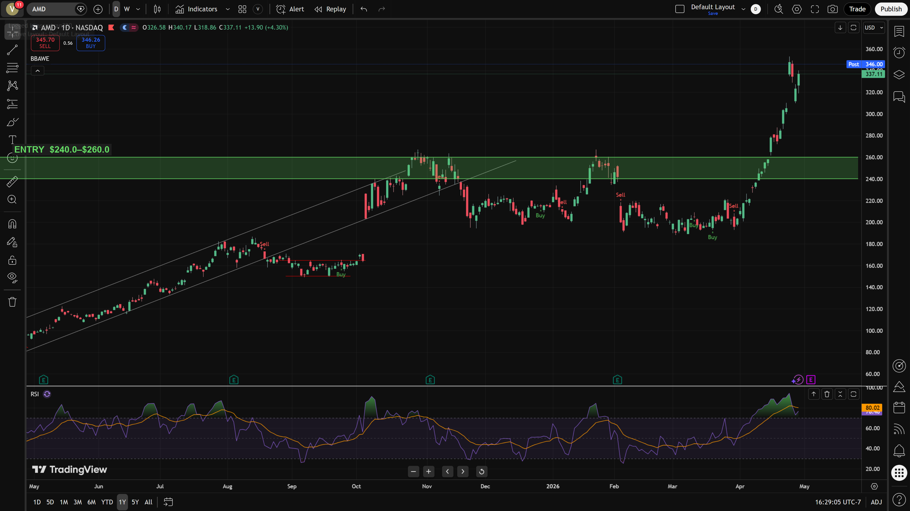
⇗ TopPrice: ~$337.11 | Entry Zone: $No clear entry zone visible at current price; significant pullback needed.
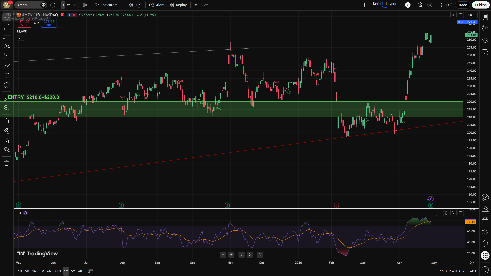
⇗ TopPrice: ~$263.04 | Entry Zone: $210–220
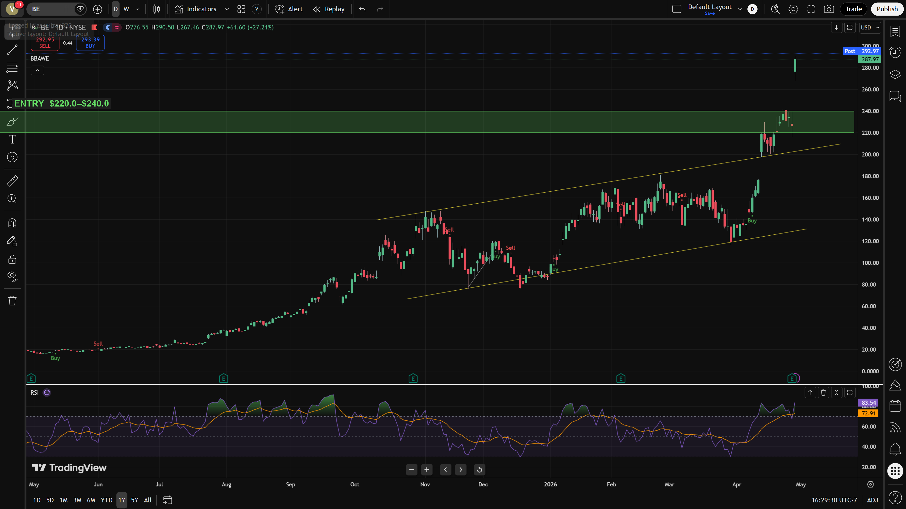
⇗ TopPrice: ~$287.97 | Entry Zone: $220–240
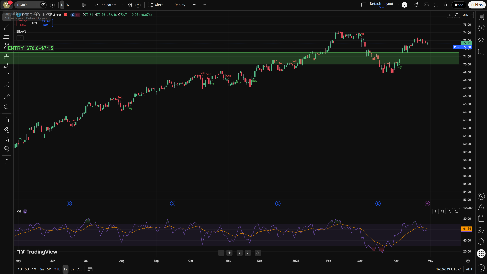
⇗ TopPrice: ~$72.71 | Entry Zone: $70.00–71.50
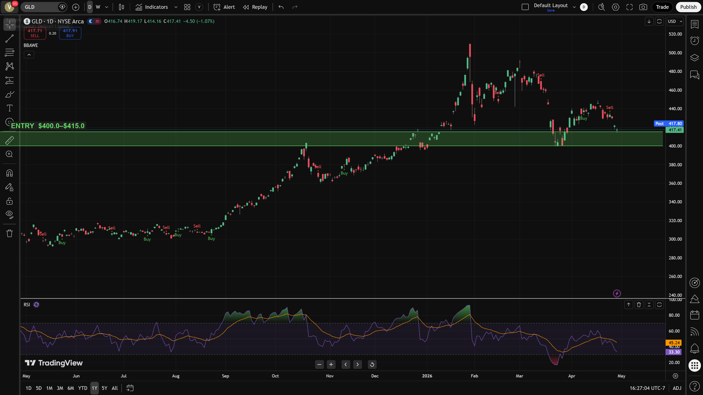
⇗ TopPrice: ~$417.41 | Entry Zone: $400–415
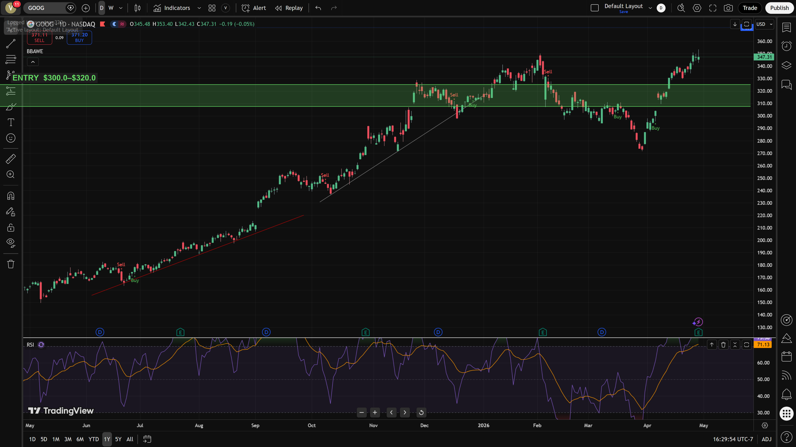
⇗ TopPrice: ~$347.31 | Entry Zone: $300–320
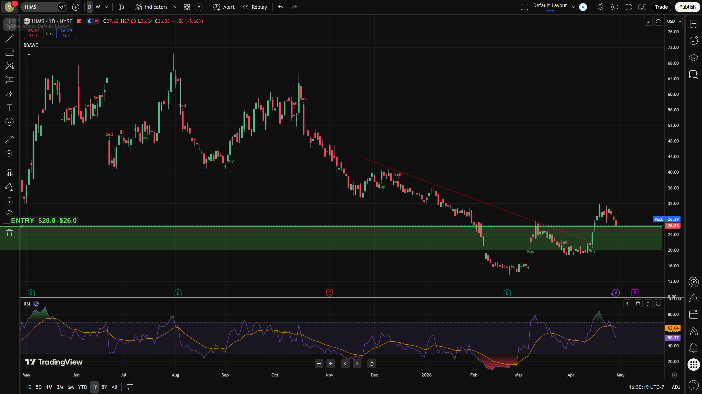
⇗ TopPrice: ~$26.33 | Entry Zone: $20–26
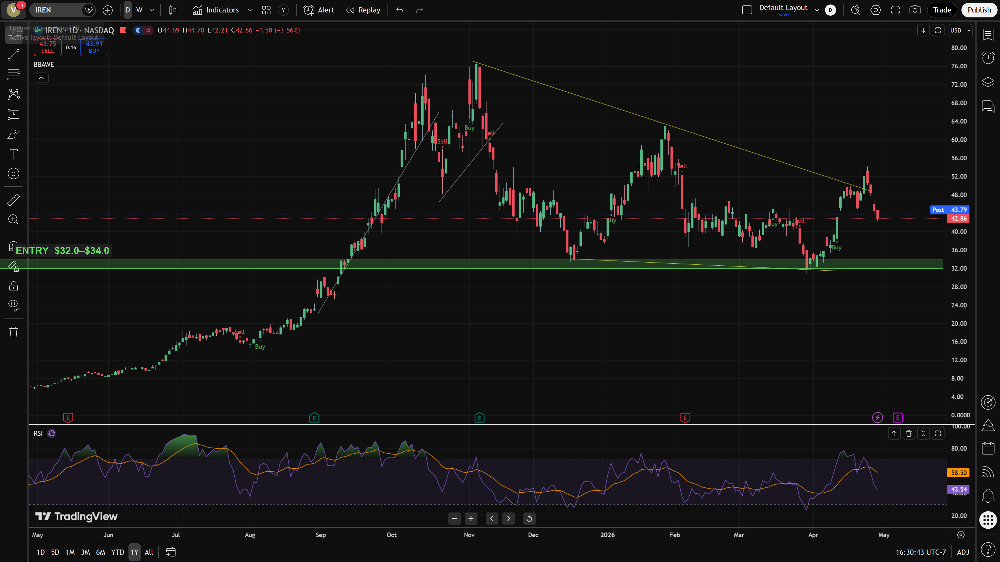
⇗ TopPrice: ~$42.86 | Entry Zone: $32–34 (lower trendline support) or above 46 (confirmed breakout)
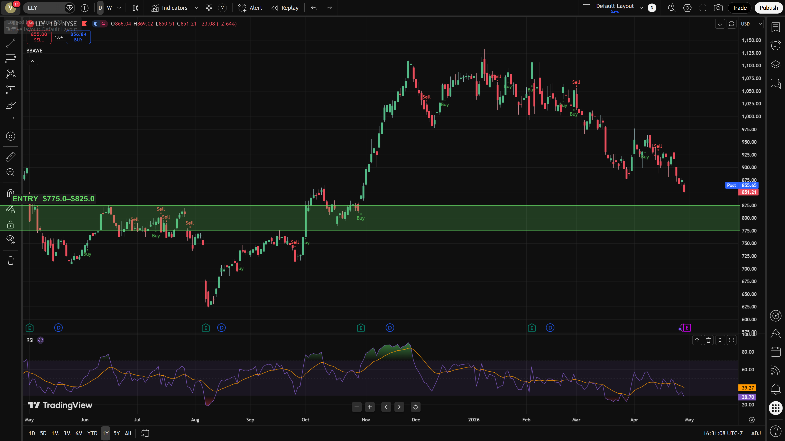
⇗ TopPrice: ~$851.21 | Entry Zone: $775–825
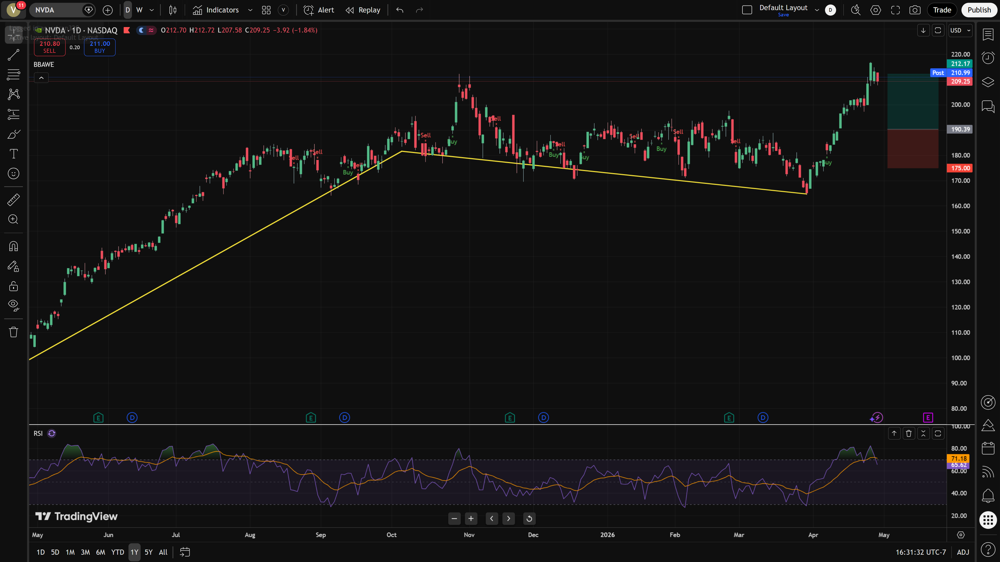
⇗ TopPrice: ~$209.25 | Entry Zone: $Not advisable at current levels; wait for a pullback
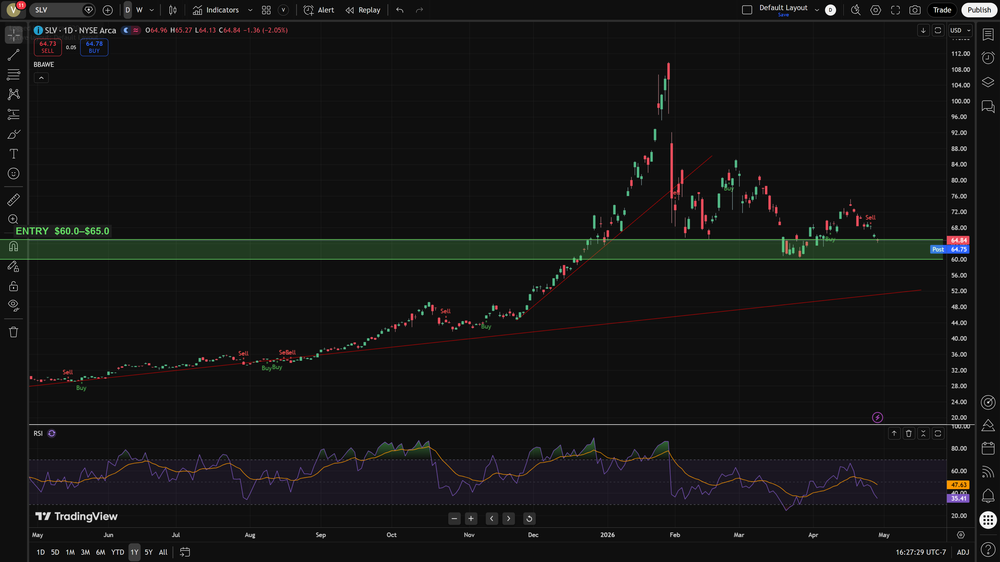
⇗ TopPrice: ~$64.84 | Entry Zone: $60–65
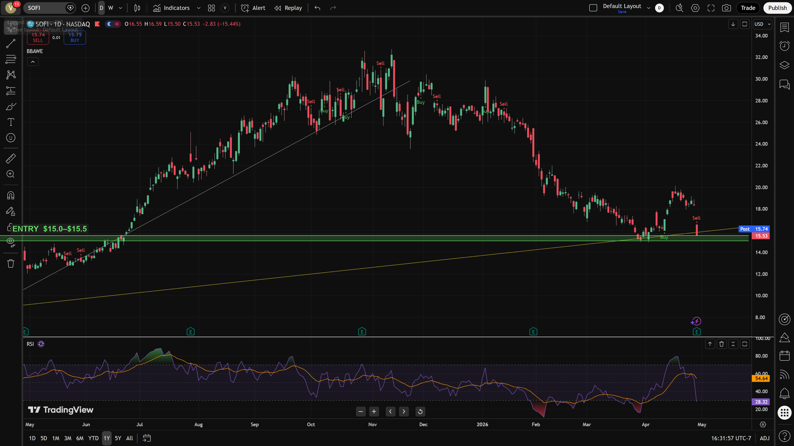
⇗ TopPrice: ~$15.53 | Entry Zone: $15.00–15.50
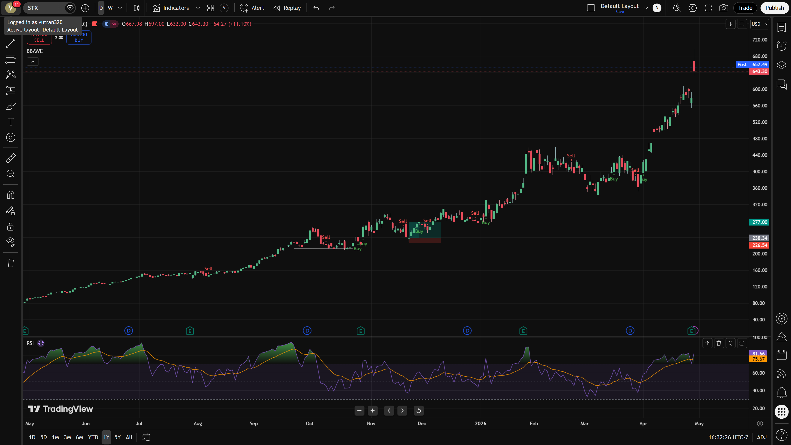
⇗ TopPrice: ~$643.3 | Entry Zone: $A significant pullback, ideally when the RSI cools down from its overbought state (below 70) and potentially forms a bullish crossover of the purple line above the orange line after a correction.
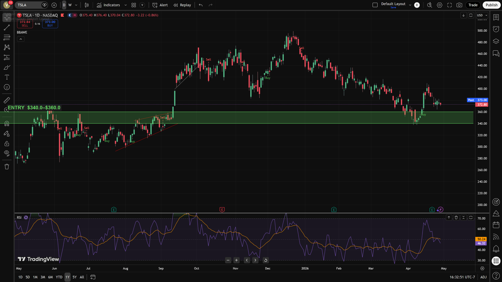
⇗ TopPrice: ~$372.8 | Entry Zone: $340–360
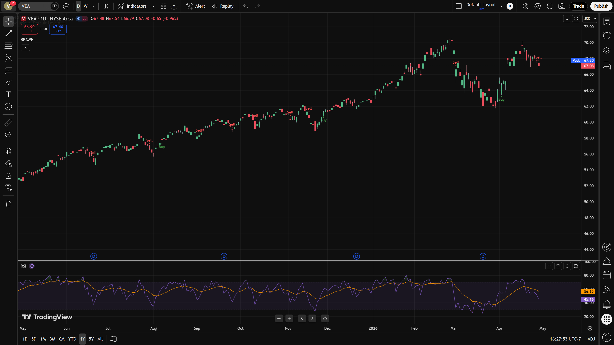
⇗ TopPrice: ~$67.08 | Entry Zone: $Not currently in an ideal entry zone; consider lower levels or a clear bullish reversal.
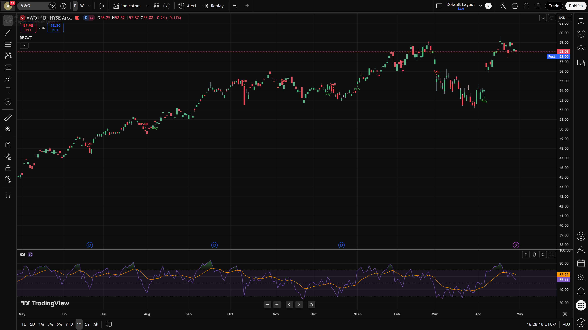
⇗ TopPrice: ~$58.08 | Entry Zone: $A clear bullish reversal signal, ideally near 52–53
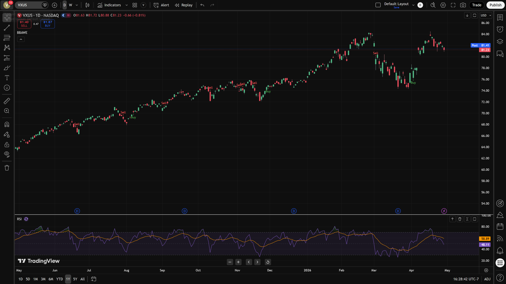
⇗ TopPrice: ~$81.23 | Entry Zone: $N/A (Downtrend)